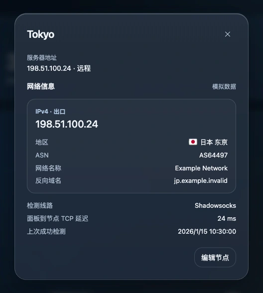

自己的代理节点，一个面板就能管
手里有一台 Linux 云服务器（VPS），就能用它搭好第一个节点。以后添了服务器，在原面板里就能部署。选好要用的线路，手机和电脑共用一条订阅。下次换线路，刷新即可。
节点列表
3 台在线我的订阅
2 条线路https://demo.invalid/s/example
换个勾选试试，上方示例订阅地址会保留。
第一次搭建，要做哪几步？
在服务器上运行安装命令
没有域名也可以从公网 IP 开始。安装器会配好 HTTPS，并自动安装 sing-box。系统里已有兼容的 1.13.x 版本时会直接复用。用户名和密码留空就会自动生成。安装结束，终端会列出面板网址和账密，用浏览器打开即可登录。
点「添加节点」，选择「本机」
节点就是设备要连接的服务器。「本机」指装面板的这台 VPS。勾选协议并保存就能建好第一个节点。以后加机器，在网页里填 SSH 登录信息、核对指纹即可，面板会远程安装。
手机扫码，电脑粘贴链接
订阅链接是客户端读取线路清单的网址。在面板中创建订阅，用 iPhone 上的 Shadowrocket 扫码，或把链接粘贴到电脑的 Clash Verge Rev。以后增减线路，刷新原订阅就行。
一条命令安装
准备一台有公网 IPv4 的 VPS，用管理员账号 root 登录，把下面的命令粘贴到服务器的 Bash 终端。安装前，在服务商安全组和系统防火墙中放行 TCP 80、443 和所选协议端口。
bash <(curl -fsSL https://raw.githubusercontent.com/sl2782087/easynode/v0.6.2/install.sh)Debian 12 / 13 · Ubuntu LTS 22.04 / 24.04 / 26.04 · Rocky Linux 8 / 9 / 10 · CentOS Stream 9 / 10
会在我的服务器上安装什么？
EasyNode 本身提供网页面板和订阅。安装脚本配好运行协议的 sing-box、管理 HTTPS 证书的 Certbot，以及负责启动服务和定时续期的 systemd 配置。面板数据保存在本机文件里，无需另装数据库。
搭好以后，面板还能帮你做什么？
从第一台面板，部署第二台服务器
填入新服务器的 SSH 地址、端口和密码，核对主机指纹。面板会安装节点，启动你选的协议。如果已有相同配置且服务正在运行，就会跳过重复安装。SSH 密码仅用于本次操作。
一台机器可以开多种线路
Shadowsocks、VLESS + REALITY、Hysteria 2 可以按需组合。密钥、连接凭据和配置文件由面板生成。使用 REALITY 时，还可以在高级设置里调整握手目标和监听端口，并测试连接。

看看这条线路实际从哪里出去
打开节点详情，点「重新检测」。面板会通过节点的一条线路发起请求，显示查到的出口 IP、地区、运营商和检测时间。使用 TCP 的线路还可以看到面板到节点的连接延迟。
先用 IP 登录，有了域名再绑
把域名解析到面板服务器，再到「用户中心」填入域名。面板会检查 DNS、申请证书并切换访问地址，后续证书自动续期。切换域名后，在客户端更新一次订阅地址即可。

项目与使用声明
易节点是简化节点部署与管理流程的开源技术框架。项目不提供代理、VPN 或任何“科学上网”服务，也不出售服务器、节点或订阅。
请仅在你拥有或获授权管理的服务器上部署。服务器和线路由你自行运营，部署和使用时请遵守部署地与使用地适用的法律法规。